Встают
на магниты
Магниты держат, контакты дают сигнал. Ни проводов, ни пайки.
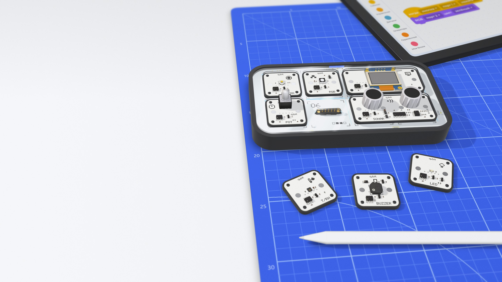
Модули на магнитах. Программы из блоков.
Конструктор электроники и программирования для детей 7–18 лет. Первый результат — на первом же уроке.
Образовательная робототехника, доступная каждому.
q.bit station.
Сделано
в Узбекистане.
Слишком много нужно понять раньше, чем появится первый результат.*
* Провода, схемы,
драйверы
Одна ошибка в схеме — и ничего не работает.
Схемы нужно понять до того, как появится интерес.
Драйверы, среда разработки, нужен компьютер.
q.bit station
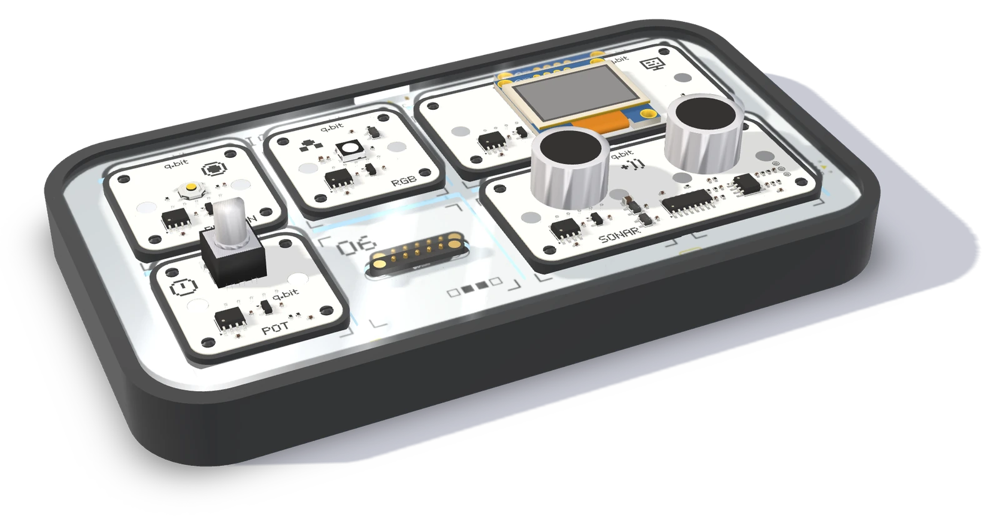
Без проводов и пайки.
Без установки.
Блоки → Python.
Модули на магнитах и программа из блоков в браузере. Первый результат — на первом же уроке.
Четыре шага,
Один пример от начала до конца: кнопка в порту 1 включает RGB в порту 2.
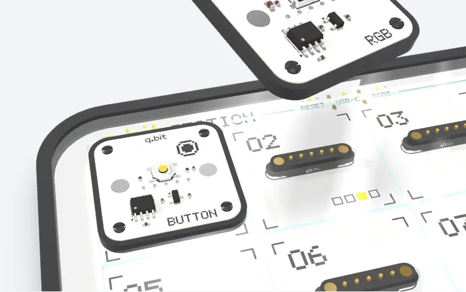
[ 1/4 ]
Магниты держат, контакты дают сигнал.
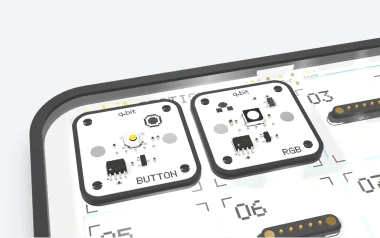
[ 2/4 ]
Тип модуля и порт видны сразу.
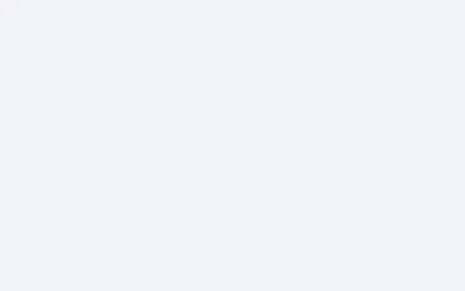
[ 3/4 ]
Блоки в браузере, без установки.
[ 4/4 ]
Кнопка нажата — RGB горит зелёным.
Станция, 32 модуля и редактор — одна система
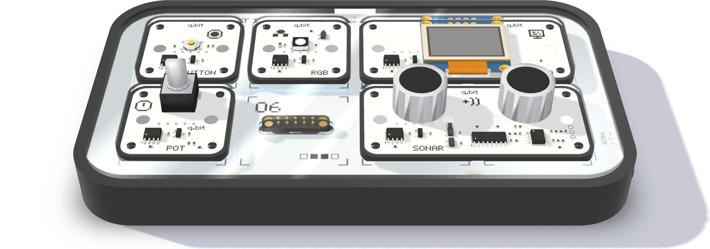
[ 1/5 ]
Станция читает его паспорт
У каждого модуля есть паспорт. Станция читает его и сразу знает, что подключено и в какой порт.
Тип и портсразу
[ 2/5 ]
Модули на магнитах, без проводов
Модуль встаёт на магниты: они держат, контакты дают сигнал. Ни проводов, ни пайки.
Портов8
[ 3/5 ]
Своя точка доступа
Станция поднимает свою точку доступа Wi-Fi. Редактор открывается по ссылке или прямо с неё.
ПроцессорESP32-S3
[ 4/5 ]
Питание и прошивка
Один разъём USB-C — и для питания, и для прошивки.
Питание и прошивкаUSB-C
[ 5/5 ]
Внутри корпуса
Аккумулятор внутри корпуса: станция работает без розетки.
Питаниебез розетки
Докупаются по одному
Кнопки, датчики, дисплеи, моторы
32 типа модулей.
Под новый проект — новый модуль.
Магниты держат, контакты дают сигнал. Ни проводов, ни пайки.
Кнопки, датчики, дисплеи, моторы и звук.
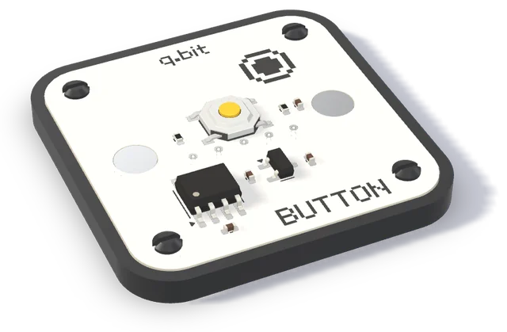
Кнопка
[ ввод ]
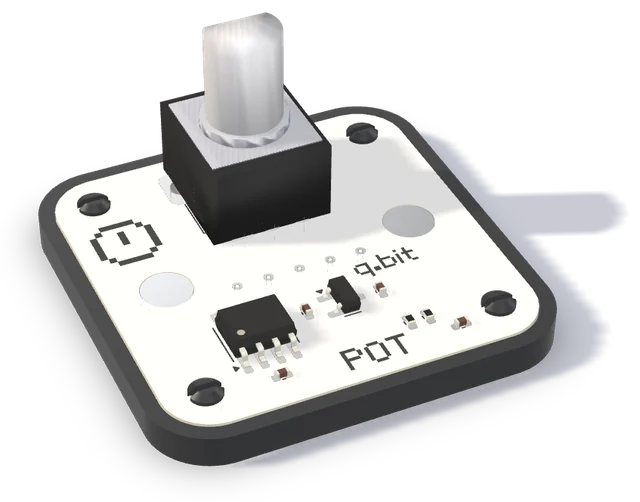
Потенциометр
[ ввод ]
RGB-светодиод
[ свет ]
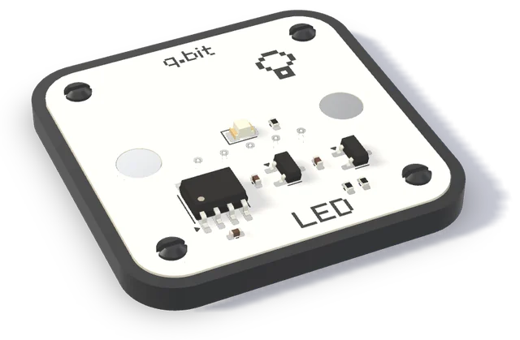
Светодиод
[ свет ]
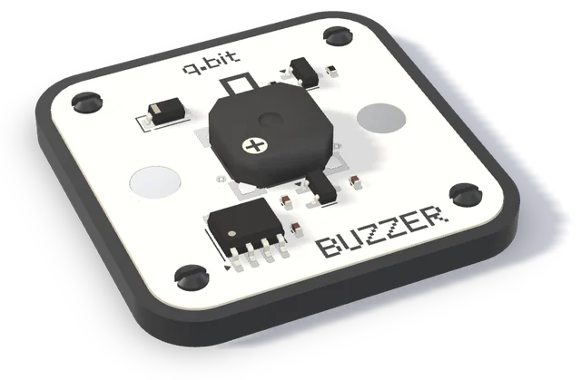
Зуммер
[ звук ]
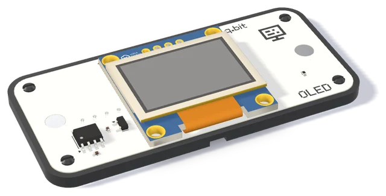
Дисплей OLED
[ дисплей ]
Температура и влажность
[ датчик ]
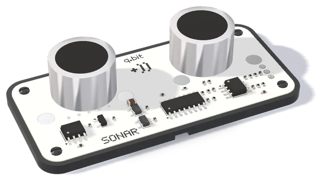
Расстояние, ультразвук
[ датчик ]
Блоки и Python
Программа из блоков собирается за минуту и сразу работает — на станции или в симуляторе.
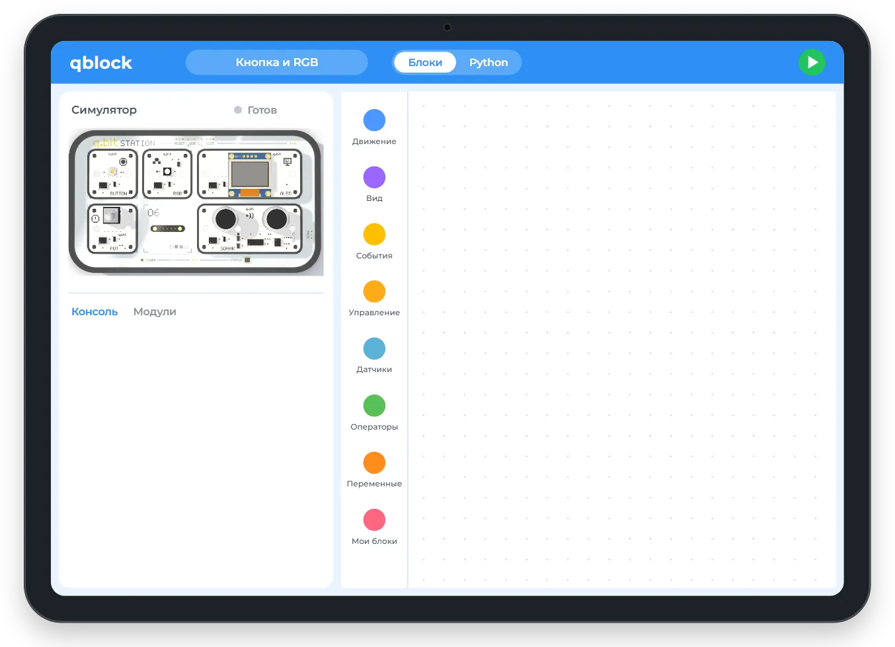
import qbit
async def when_button_p1_press():
qbit.rgb(2).color('green')
qbit.button(1).when('press', when_button_p1_press)
qbit.run()Тот же код, когда ребёнок готов.
По ссылке или со станции по Wi-Fi.
Русский, узбекский, английский.
Наборы
Начните со стартового комплекта и докупайте модули под новые проекты.
Стартовый комплектСтанция и 12 модулей — первая покупка семьи или класса.
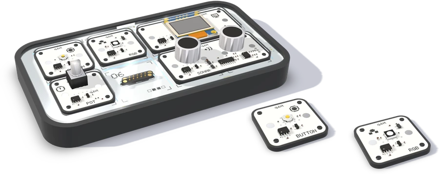
Дополнительные модули32 типа, докупаются по одному под новый проект.
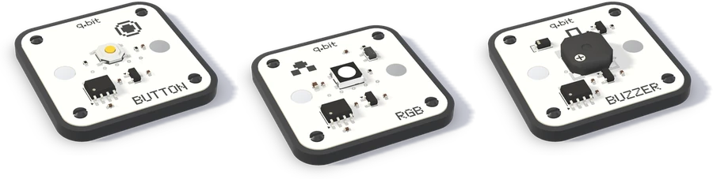
Образовательный наборВсе 32 модуля и уроки — для школ и учебных центров.
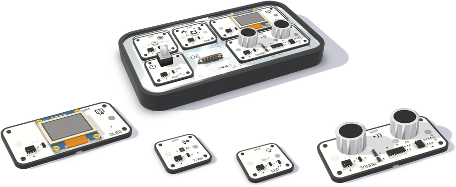
Выберите свой
| Набор 1Стартовый комплектСтанция и 12 модулей — первая покупка семьи или класса. | Набор 2Дополнительные модули32 типа, докупаются по одному под новый проект. | Набор 3Образовательный наборВсе 32 модуля и уроки — для школ и учебных центров. |
|---|---|---|
| Станция:Есть | Станция:— | Станция:Есть |
| Модули:12 | Модули:По одному, 32 типа | Модули:Все 32 |
| Уроки:— | Уроки:— | Уроки:Есть |
| Для кого:Семья или класс | Для кого:Новый проект | Для кого:Школы и учебные центры |
Характеристики
Характеристики могут измениться.